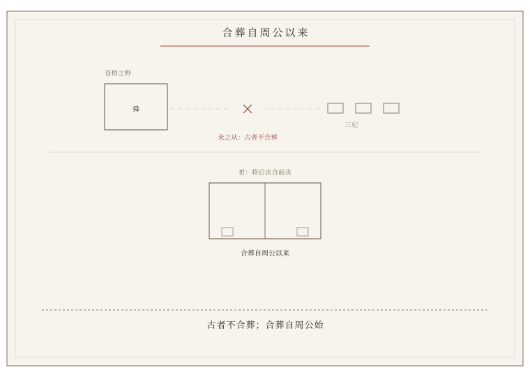

檀弓上 · 三·二十八 · 第 231 课
舜葬于苍梧之野，盖三妃未之从也；季武子曰「周公盖祔」。注「古者不合葬」「祔谓合葬，合葬自周公以来」。
说什么事：一个人的葬处，离他的三个妃子很远；后来才把两人合在一处。
落在哪一层：礼，兼及礼制与史。论合葬之所始。
为何编在此位：上节论哭之限，此节论葬之制。哭有时，葬有始。
【经】舜葬於蒼梧之野，蓋三妃未之從也。季武子曰：「周公蓋祔。」
【注】舜征有苗而死，因留葬焉。《書》說舜曰「陟方乃死」。蒼梧，於周南越之地，今為郡。古者不合葬。帝嚳而立四妃矣，象后妃四星，其一明者為正妃，餘三小者為次妃。帝堯因焉。至舜不告而取，不立正妃，但三而已，謂之三夫人。《離騷》所歌湘夫人，舜妃也。夏后氏增以三三而九，合十二人。《春秋說》云「天子取十二」，即夏制也。以虞、夏及周制差之，則殷人又增以三九二十七，合三十九人；周人上法帝嚳，立正妃，又三二十七為八十一人，以增之合百二十一人。其位后也、夫人也、嬪也、世婦也、女御也，五者相參以定尊卑。祔謂合葬，合葬自周公以來。
【疏】此一节论古者不合葬之事。舜南巡守，因征有苗而死，以古代不合葬，且天下为家，故遂葬于苍梧之野。「盖三妃未之从也」，从犹就也；古不合葬，故舜之三妃不就苍梧与舜合葬也。云「盖」者，录记之人传云舜时如此，未知审也。「未之从」者，记人以周公始祔，舜时未有此礼，故云「未之从」。记者既论古不合葬，与周不同，引季武子之言云周公以来盖始祔葬；祔即合也，言将后丧合前丧。武子去周公不远，无可疑，亦云「盖」者，意有谦退，不敢指斥；事虽不疑，亦云「盖」也。故《孝经》夫子云「盖天子之孝」也、「盖诸侯之孝也」，非是不知，谦为疑辞。郑案《淮南子》「舜征三苗而遂死苍梧」；《史记》「舜践帝位三十九年，南巡守，崩于苍梧之野，葬于九疑山，是为零陵」；《尚书》「窜三苗于三危」在西裔，今舜征有苗乃死于苍梧者，张逸答焦氏问云「初窜西裔，后分之在南野」；《汉书·地理志》有苍梧郡。知帝喾立四妃者，案《大戴礼·帝系篇》「帝喾卜四妃之子，皆有天下」：长妃有邰氏之女姜嫄生契，次妃有娀氏之女简狄生契，次妃陈丰氏之女庆都生尧，次妃陬氏之女常宜生帝挚；郑此注用《帝系》之文，及注《诗·生民》，以为姜嫄是高辛之世妃，用《命历序》之文，以为帝喾传十世，姜嫄是十世以后子孙之妃。云「象后妃四星」，《援神契》「辰极横后妃四星，纵曲相扶」；《祭法》「帝喾能序星辰以著众」，明象星立妃也。「帝尧因焉」者，以此经云舜三妃未之从，明尧亦四妃也。「舜不告而取」，《孟子》万章问「舜不告而取何也」，孟子曰「告则不得取」。「但三妃而已」，《帝王世纪》「长妃娥皇无子，次妃女英生商均，次妃癸比生二女霄明、烛光」。「《离骚》所歌湘夫人」，《楚辞·九歌》第三曰《湘夫人》；王逸注《离骚》「娥皇女英，堕湘水溺焉」，又《秦纪》「死而葬焉，非溺也」；《山海经》以为二女，此云三者，当以《记》为正。云「周人上法帝喾，立正妃」者，案《昏义》「后一、夫人三」是也。殷已有后者，谓三妃里之正，仍无后也。嫔即夏所增九女，世妇即殷所增二十七，女御即周所增八十一，自夏以下节级三倍加之。
苍梧 注「于周南越之地，今为郡」。
三妃 注「谓之三夫人」。娥皇、女英、癸比。
未之从 注「从犹就也」。未就而合葬。
盖 疑辞。疏「未知审也」。
季武子 鲁大夫季孙宿。
祔 注「祔谓合葬」。
舜葬在苍梧之野，大概三个妃子没有随他就合葬。季武子说：「周公大概才开始合葬。」
此节两句，各带一「盖」。第一句说古不合葬，第二句说合葬自周公始。两个「盖」都不是含糊，是留分寸：记礼之人不敢断言舜时之事，鲁大夫不敢直断周公之制。疏于此辨得极细：「事虽不疑，亦云盖也」。
第一层 古者不合葬 注一句「古者不合葬」，把整节的骨头立起。舜葬苍梧而三妃不从，不是无情，是当时无此礼。此层可见礼有「未始」之时：不是所有今天视为当然的礼，都从来就有。
第二层 合葬自周公 季武子「周公盖祔」。疏「祔即合也，言将后丧合前丧」。合葬之制，被追溯到一个具体的人。古人论礼之始，惯于归之于一圣一贤，此为一种「礼有作者」的观念。
第三层 两个「盖」 疏辨两层：记者之「盖」，是「未知审」；武子之「盖」，是「意有谦退，不敢指斥」。同一字，两样心。又引《孝经》「盖天子之孝」为证：非不知，谦为疑辞。此层最见古人之辞气：知道而不敢说死，是礼，不是怯。
第四层 三妃与百二十一 注疏一路数到周之百二十一，列后、夫人、嫔、世妇、女御五位以定尊卑。此段是制度史的材料，与本节「合葬」之事只在一点上相关：皆论「配」之数与其位。读之可观古人如何把「一对」的事推成一整套等级。
与今日何干 凡制度，都有其「始」。今人以为天经地义的做法，往往只是某一代人的一次安排。此节给一个提醒：论礼先问其始，始明则知其可变与不可变。
| 左 | 右 |
|---|---|
| 舜葬于苍梧之野 | 征有苗而死，因留葬 |
| 盖三妃未之从 | 古者不合葬 |
| 盖者，未知审也 | 记者之疑辞 |
| 季武子曰周公盖祔 | 祔谓合葬 |
| 合葬自周公以来 | 礼有其始 |
| 武子之盖 | 谦退不敢指斥，非不知 |
| 三妃：娥皇、女英、癸比 | 至周则百二十一，五位定尊卑 |
画两处葬地并列，上下分幅，以浅色横线相隔。上幅：一片南方的野地，远处山势低缓，中央一座孤坟，坟前一块无字素石；坟的右方很远的地方，并列三座小小的土丘，与孤坟之间隔着一段明显的空地，地上无路。下幅：一座规整的墓，墓上一条竖向的石缝把墓室分成两半，两半各有一块素石，石缝两侧对称。两幅皆无碑文。不写文字、不画人。赭色只用在两幅中各一块素石的底部。
